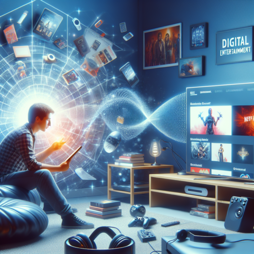
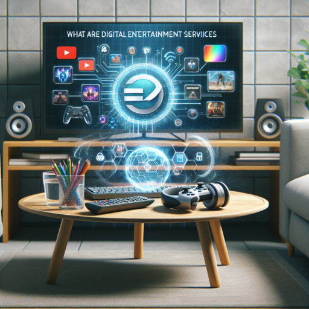

El entretenimiento ya no es lo que era. Se acabaron las tardes de domingo en el parque con la familia, la espera interminable por el episodio semanal de tu serie favorita, o las idas a la tienda de discos para conseguir ese álbum que tanto te gusta. Bienvenido al siglo XXI, donde el ocio no es solo un lujo, sino una necesidad cubierta de manera digital.Hoy, el entretenimiento digital está redefiniendo la forma en que disfrutamos de nuestro tiempo libre
El entretenimiento digital no es solo una moda pasajera, es una revolución que ha llegado para quedarse. Desde la aparición de la televisión, el cine y los videojuegos, la tecnología ha transformado nuestra manera de divertirnos. Pero lo que estamos viviendo ahora es algo sin precedentes. Con la llegada de internet, el streaming, la realidad virtual (VR), la realidad aumentada (AR) y el blockchain, hemos dado un salto cuántico en la forma en que consumimos entretenimiento.

El entretenimiento digital ha evolucionado significativamente con el avance de la tecnología. Hemos pasado de la televisión y los DVDs a servicios de streaming bajo demanda, videojuegos inmersivos con realidad virtual, y el auge de las redes sociales como formas predominantes de entretenimiento. Además, el desarrollo de la inteligencia artificial y los NFTs ha introducido nuevas formas de personalización y propiedad en el contenido digital.

Algunas de las tendencias actuales en entretenimiento digital incluyen la creciente popularidad del streaming de video y música, el auge de los videojuegos con tecnología de realidad virtual y aumentada, la expansión de los esports, y la integración de inteligencia artificial en la creación de contenido. Además, los NFTs y el blockchain están transformando la propiedad digital y la forma en que los creadores monetizan su trabajo.
Algunas de las tendencias actuales en entretenimiento digital incluyen la creciente popularidad del streaming de video y música, el auge de los videojuegos con tecnología de realidad virtual y aumentada, la expansión de los esports, y la integración de inteligencia artificial en la creación de contenido. Además, los NFTs y el blockchain están transformando la propiedad digital y la forma en que los creadores monetizan su trabajo.
Algunas de las tendencias actuales en entretenimiento digital incluyen la creciente popularidad del streaming de video y música, el auge de los videojuegos con tecnología de realidad virtual y aumentada, la expansión de los esports, y la integración de inteligencia artificial en la creación de contenido. Además, los NFTs y el blockchain están transformando la propiedad digital y la forma en que los creadores monetizan su trabajo.